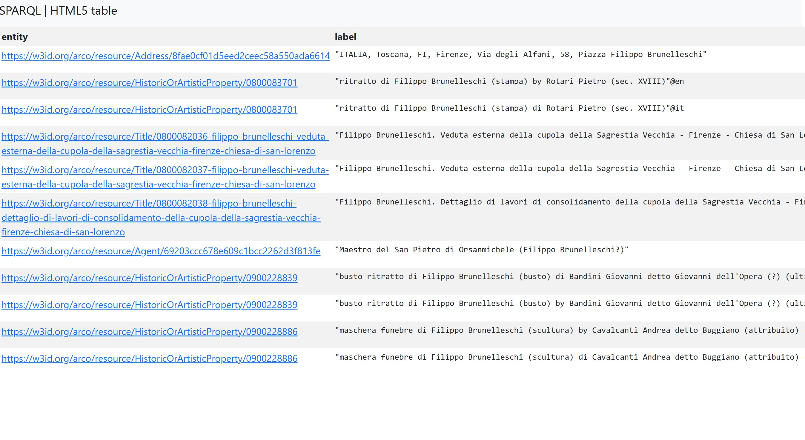
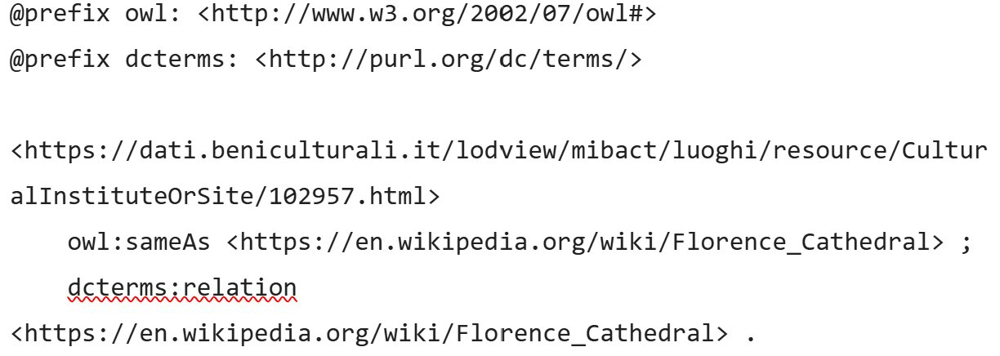

Huge Informational Gap
After analyzing all our SPARQL queries, we came to the disappointing result that ArCo completely lacks information about the architect of the dome of the Cathedral of Santa Maria del Fiore. When searching for the cathedral and its architect, the results are zero. When searching for Santa Maria del Fiore OR cupola, it returns the results of random domes, among which there is no necessary one.
The basilica is one of the world's largest churches, and its dome is still the largest masonry dome ever constructed.
So we searched for what we could actually find by searching for Filippo Brunelleschi.
PREFIX rdfs: <http://www.w3.org/2000/01/rdf-schema#>
PREFIX arco: <https://w3id.org/arco/ontology/arco/>
SELECT DISTINCT ?entity ?label
WHERE {
?entity rdfs:label ?label .
FILTER(CONTAINS(
LCASE(STR(?label)),
"filippo brunelleschi"
))
}
LIMIT 100
The query produces no results. This proves that ArCo does not contain information about the architecture of the dome, as the only church we find is Chiesa di San Lorenzo. LINK

To replenish ArCo by completing such an important piece of information, we need to connect two sources. We will do this using RDF triples written in Turtle syntax. The missing information was found on wikipedia at this link. LINK

The syntax was tested in RDF playground and found to be correct.
Subject: The Santa Maria del Fiore cathedral resource page within the ArCo database.
Object: The Florence Cathedral article page on Wikipedia.
owl:sameAs: Declares that both resources represent the exact same real-world entity, mapped across two different databases.
dcterms:relation: Expresses a broader, non-identical link—capturing the shared historical and cultural context between the two resources.